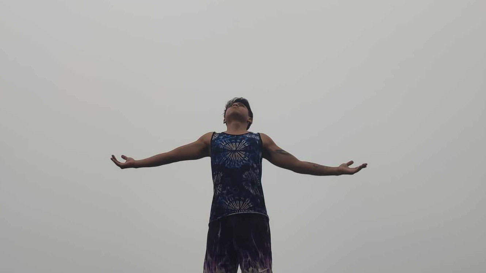

Naintindihan ko na may mga bagay na hindi maituturo ng kahit sino man o matutunan sa pakikinig lang o pagbabasa. May mga bagay na kailangan nating maranasan bago natin maintindihan.
Sa pakikipagsapalaran kong ito sa anim na buwan mas naiintindihan ko ang sarili ko, mas naiintindihan ko ang sitwasyon ko at mas napapalapit ako sa maykapal.
Sa anim na buwan may mga araw na nakatulala lang ako, sumasayaw, kumakanta, tumatawa ng mag-isa at wala akong nakakausap kundi ang sarili ko lang.
Wala man akong kasama, wala mang akong kausap, pero kahit kailan man hindi ko naramdaman ang kalungkutan na mag-isa kasi kasama ko ang sarili ko at may Diyos na nanonood saakin.
Going to an adventure, challenging myself, seeking discomfort and trying new experiences are the things the keeps me alive. Ito ang mga bagay na nagbibigay ng kulay sa madilim kong buhay.
Naiintindihan ko na lahat tayo magkaiba at iba't iba ang mga bagay na gusto nating maranasan sa buhay.
Kaya ikaw? Ano ang sakripisyo na kaya mong gawin para maranasan ang bagay na gusto mong maranasan?